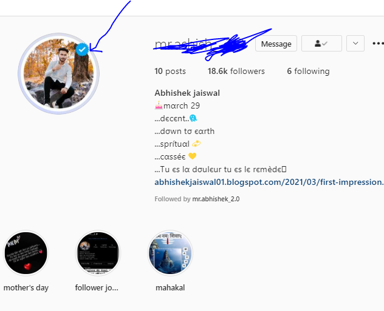
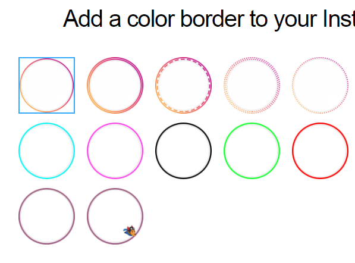
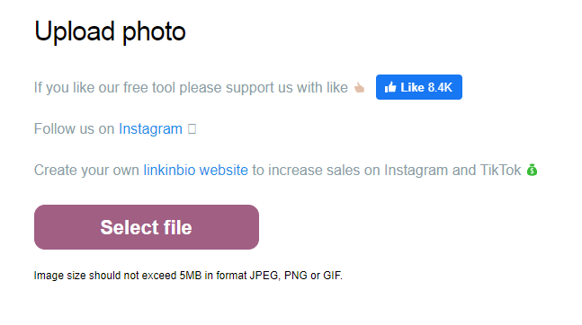
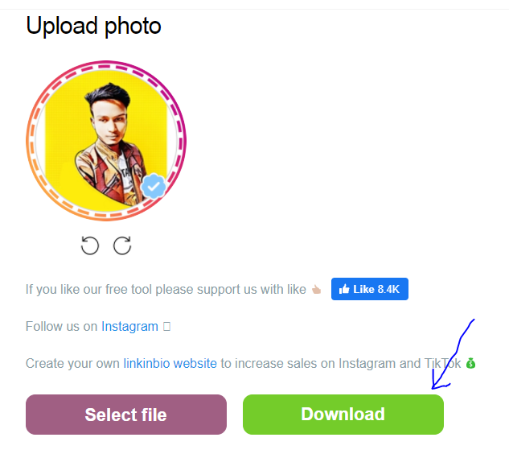

follow this simple steps and get a ring with amazing fake blue tick on you picture
Step 1: open link given below
Step 2: Now select the ring which you want to put on yout profile.
Step 3: tick on check box to get a blue tick
Step 4: Click on upload option . and upload your pic
Step 5: Now your picture is ready click on download option and download it.
